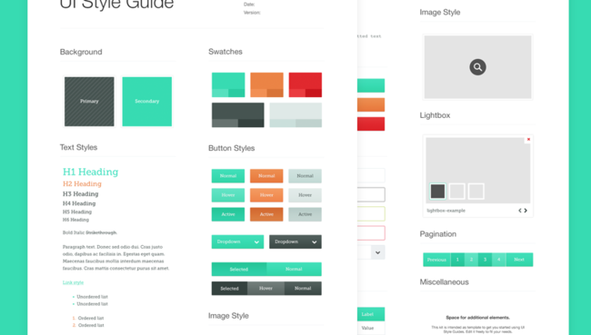

#### Fixed design vs Fluid design

- Fixed design: dimensions in pixel
- Fluid design: dimensions in %
http://www.liquidapsive.com/

Le positionnement des éléments devrait toujours suivre le flow de la page ou être relatif à leur parents si nécessaire. Éviter les positionnements statiques.
Exprimer Espacements verticaux (vertical rythme) en em ou rem
```css
html { font-size: 62.5%; }
body { font-size: 1.4rem; } /* =14px */
h1 { font-size: 2.4rem; } /* =24px */
```
#### Adaptative design

- Nombre de breakpoint limités (limite min) souvent mobile/tablette/desktop
- Design optimum lorsque son cadre est proche des limites de l'écran
- Les appareils dictes les breakpoints
- Design optimum seulement sur quelques appareils
http://www.liquidapsive.com/
#### Responsive design
- Mélange de design fluide et adaptatif
- Le contenu dicte les breakpoints
- chaque élément dispose de ses propres breakpoints si nécéssaire
#### Mobile first Design

- Designer la simple expression, puis la plus complexe
- Enrichir et non restreindre
- Solution plus légères, plus efficaces
#### Choix et optimisation des assets
Choix et optimisation des assets
Préférer les images vectorielles

Utiliser des fonts d'icones
Utilisez des services tiers pour créer et organiser les icones/fonts
Uploader et convertir .svg en font
Génère tous formats wefonts
Sauvegarder/organiser
CSS tools
Prévoirs des images pour différentes densité de pixels
Les pixels ne sont plus un unités pertinante.
Utilisez rem comme unité de mesure.
```
html { font-size: 62.5%; }
body { font-size: 1.4rem; } /* =14px */
h1 { font-size: 2.4rem; } /* =24px */
```
3. CSS
3.1. Bonnes pratiques
## La solution ultime au problème de ```padding```
```
* {
box-sizing: border-box; // ultimate solution to box-sizing. Padding is included into boxes dimensions not added to it.
}
```
3.1.1. Nomenclature
1. Utiliser des classes préférablement. Les id(#) sont uniques, ils servent d'ancre dans la page ou au javascript.
2. Séparation du style et de la DOM (separation of concern). La classe ne nomme pas le style elle nomme, l'objet auquel s'applique le style.
Inconvénients:
* Classes gigognes (imbriquées) rend analyse du CSS plus lent.
* Maintenance difficile
* Conflits possibles
* Surcharge souvent nécessaire
Exemple CSS:
Outil servant à vérifier que les bonnes pratiques sont bien suivies.
3.1.2. Architecture
Rénitialiser les style des éléments HTML (css reset)
Identifier des modules: blocs de contenu au style et aux fonctionnalités similiaires entre les pages ou dans une même page
Intégrer un guide stylistique (Style Guide)
Intégrer un guide stylistique

KSS http://warpspire.com/kss/styleguides/
Permet de générer un guide stylistique d'après la documentation du code
/*
A button suitable for giving stars to someone.
:hover - Subtle hover highlight.
.stars-given - A highlight indicating you've already given a star.
.stars-given:hover - Subtle hover highlight on top of stars-given styling.
.disabled - Dims the button to indicate it cannot be used.
Styleguide 2.1.3.
*/
a.button.star{
...
}
a.button.star.stars-given{
...
}
a.button.star.disabled{
...
}
3.1.2. Architecture
Rénitialiser les style des éléments HTML (css reset)
Identifier des modules: blocs de contenu au style et aux fonctionnalités similiaires entre les pages ou dans une même page
Intégrer un guide stylistique (Style Guide)
Séparer les variables dans un ou plusieurs fichiers (ex: vars.scss, colors.scss, fonts.scss, breakpoints.scss)
```
$name: foo;
$attr: border;
p.#{$name} {
#{$attr}-color: blue;
}
```
```
@mixin firefox-message($selector) {
body.firefox #{$selector}:before {
content: "Hi, Firefox users!";
}
}
@include firefox-message(".header");
```
```
p:before {
content: "I ate #{5 + 10} pies!";
}
```
```
p {
$font-size: 12px;
$line-height: 30px;
font: #{$font-size}/#{$line-height};
}
```
###### @import
Suffix "_" désigne les "partials".
```
@import "foo.scss";
@import "foo";
```
Importe tous les deux un fichier scss. Note que l'extension est optionnelle.
"_" est implicite. On ne peut donc pas créer un partial et un "non-partial" dans le même répertoire.
Par contre les appels suivant créeer une règle css @import.
```
@import "foo.css";
@import "foo" screen;
@import "http://foo.com/bar";
@import url(foo);
```
```js
var myObject = {
sProp: 'some string value',
numProp: 2,
bProp: false
};
```
```js
var Swapper = {
// an array literal
images: ["smile.gif", "grim.gif", "frown.gif", "bomb.gif"],
pos: { // nested object literal
x: 40,
y: 300
},
onSwap: function() { // function
// code here
}
};
```
- Configuration
- Librarie (namespace)
- Arguments (lorsque une fonction a plus de 3 arguments)
- !! Facile de faire des erreurs
- !! No scope
#### 2.iii Prototype
##### Custom Constructor
```js
// constructor
function Waffle() {
this.tastes = "yummy";
}
// a new object
var good_morning = new Waffle();
console.log(typeof good_morning); // "object"
console.log(good_morning.tastes); // "yummy"
// antipattern:
// forgotten `new`
var good_morning = Waffle();
console.log(typeof good_morning); // "undefined"
console.log(window.tastes); // "yummy"
```
##### Custom Constructor Secured
```js
function Waffle() {
if (!(this instanceof Waffle)) {
return new Waffle();
}
this.tastes = "yummy";
}
Waffle.prototype.wantAnother = true;
// testing invocations
var first = new Waffle(),
second = Waffle();
console.log(first.tastes); // "yummy"
console.log(second.tastes); // "yummy"
console.log(first.wantAnother); // true
console.log(second.wantAnother); // true
```
#### 2.iv Functions
2.iv Functions
```js
function foo() {} // declaration
var bar = function () {}; // expression
var baz = function baz() {}; // named expression
foo.name; // "foo"
bar.name; // ""
baz.name; // "baz"
```
```js
// !! antipattern for illustration only global functions
function foo() {
alert('global foo');
}
function bar() {
alert('global bar');
}
function hoistMe() {
console.log(typeof foo); // "function"
console.log(typeof bar); // "undefined"
foo(); // "local foo"
bar(); // TypeError: bar is not a function
// function declaration:
// variable 'foo' and its implementation both get hoisted
function foo() {
alert('local foo');
}
// function expression:
// only variable 'bar' gets hoisted
// not the implementation
var bar = function () {
alert('local bar');
};
}
hoistMe();
```
##### Bind "```this```" context
```js
this.x = 9;
var module = {
x: 81,
getX: function() { return this.x; }
};
module.getX(); // 81
var getX = module.getX;
getX(); // 9, because in this case, "this" refers to the global object
// Create a new function with 'this' bound to module
var boundGetX = getX.bind(module);
boundGetX(); // 81
```
Closure
Closure
Variable globale
```js
var user = {
// ...
}
```
Retourne la variable donc la valeur peut être connue
```js
function initUser(){
var user = new User();
return user;
}
```
Créer un closure de confidentialité
```js
var setup = function () {
alert(1);
var user = new User();
return function () {
alert(2);
// do stuff for this user
};
};
// using the setup function
var my = setup(); // alerts 1
my(); // alerts 2
```
Fonction immédiate
```js
var result = (function () {
return 2 + 2;
}());
```
```js
var user = (function (dep1, dep2) {
var user = new User();
// ...
return this; // could be { ... }
}(dep1, dep2));
```
On vient de créer un module.
```js
// main.js
(function ($) {
$( document ).ready(function(){
// ...
});
}(jQuery));
```
##### Callback / return function
```
function writeCode(callback) {
// do something...
callback();
// ...
}
function introduceBugs() {
// ... make bugs
}
writeCode(introduceBugs);
```
Util pour
- Taches asynchrone (Requête ajax)
- Communiquer entre modules
- Garder un objectif unique à chaque fonction
Garder un objectif unique à chaque fonction
Exemple:
var findNodes = function () {
var i = 100000, // big, heavy loop
nodes = [], // stores the result
found; // the next node found
while (i) {
i -= 1;
// complex logic here...
nodes.push(found);
}
return nodes;
};
var hide = function (nodes) {
nodes.forEach(function(){
nodes[i].style.display = "none";
});
};
// executing the functions
hide(findNodes());
Meilleur solution
```js
// refactored findNodes() to accept a callback
var findNodes = function (callback) {
var i = 100000,
nodes = [],
found;
// check if callback is callable
if (typeof callback !== "function") {
callback = false;
}
while (i) {
i -= 1;
// complex logic here...
// now callback:
if (callback) {
callback(found);
}
nodes.push(found);
}
return nodes;
};
// a callback function
var hide = function (node) {
node.style.display = "none";
};
// find the nodes and hide them as you go
findNodes(hide);
```
##### Returned function
```js
function writeCode(callback) {
// do something...
callback();
return function(){
// writeCode say do this in return
}
// ...
}
function introduceBugs() {
// ... make bugs
}
writeCode(introduceBugs)();
```
##### Memoization
```js
var myFunc = function (param) {
if (!myFunc.cache[param]) {
var result = {};
// ... expensive operation ...
myFunc.cache[param] = result;
}
return myFunc.cache[param];
};
// cache storage
myFunc.cache = {};
```
https://lodash.com/docs#memoize
#### 2.v. Bonnes pratiques
##### A. Modulariser
http://addyosmani.com/writing-modular-js/
```js
(function () {
var $ = this.jQuery;
this.myExample = function () {};
}());
```
###### AMD pattern
http://requirejs.org/docs/whyamd.html
- (+) Loading asynchrone des modules
- (-) Syntaxe complèxe
```js
define(['jquery'] , function ($) {
return function () {};
});
```
Syntaxe complèxe
```js
define(function (require) {
var dependency1 = require('dependency1'),
dependency2 = require('dependency2');
return function () {};
});
```
###### CommonJS
```js
var $ = require('jquery');
function init(){ /*...*/ }
module.exports = { "init": init };
```
- (+) Syntaxe simple (NodeJs Style)
- (+) Executable server side
- (-) Doit être traduit pour le navigateur avec Browserfy
 (grunt task)
##### C. Quelques notions d’optimisation
Eviter les manipulations de DOM
écriture mais aussi lecture
Changer la DOM en batch
mauvais
```js
// This will incurr 5 screen refreshes
jQuery('#dialog-window').width(600).height(400).css('position': 'absolute')
.css('top', '200px').css('left', '200px');
```
BON
```js
// Let jQuery handle the batching
jQuery('#dialog-window').css({
width: '600px',
height: '400px',
position: 'absolute',
top: '200px',
left: '200px'
);
```
```js
// Or even better use a CSS class.
jQuery('#dialog-window').addClass('mask-aligned-window');
```
Templating
- http://ejohn.org/blog/javascript-micro-templating/
- http://www.html5rocks.com/en/tutorials/webcomponents/template/
- http://plugins.jquery.com/loadTemplate/
- Mustache
- Handlebars
- Garder la DOM simple
- Construire la DOM séparément puis l'insérer dans la page
- Garder des références aux éléments de DOM courament manipulés
- Supprimer les écouteurs d'events inutilisés
- Attention aux events répétitif (scroll etc.) _.debounce
- Use ```push()```, ```pop()```, ```shift()```, ```join()``` même sur les ``string```
Autres
- https://developers.google.com/speed/articles/optimizing-javascript
- http://desalasworks.com/article/javascript-performance-techniques/
- http://api.jquery.com/promise/
Ressources
- https://developers.google.com/speed/articles/optimizing-javascript
- https://developer.mozilla.org/en-US/docs/Web/JavaScript/Memory_Management
##### Tests automatisés
- Mocha + Chai
- Qunit
#### 2.vi. Javascript Tools
##### Debug
##### Libraries / Frameworks
- https://github.com/components : Les Incontournables !!
- Angular.js
- lodash
- Underscore
- Backbone
- ReactJs
#### 2.vii. Ressources
##### Livres
* [Javascript Patterns](http://shop.oreilly.com/product/9780596806767.do)
* [Eloquent Javascript](http://search.oreilly.com/?q=eloquent+javascript)
##### Sites web
* [Can I Use](http://caniuse.com/)
* http://www.html5rocks.com/en/
* http://addyosmani.com/writing-modular-js/
* [developer.mozilla.org - Closure](https://developer.mozilla.org/en-US/docs/Web/JavaScript/Closures)
* [developer.mozilla.org - Memory_Management](https://developer.mozilla.org/en-US/docs/Web/JavaScript/Memory_Management)
* https://developers.google.com/speed/articles/optimizing-javascript
* http://desalasworks.com/article/javascript-performance-techniques/
#### 2.vii. Ressources
##### Vidéos
* [JS must watch](https://github.com/bolshchikov/js-must-watch)
* [Dev on Stage - Youtube playlist](https://www.youtube.com/playlist?list=PL8l7YtFPKywaQ_VhZSeElM8D1JWpJKtKV)
* [Lunch and learn - Youtube playlist](https://www.youtube.com/playlist?list=PL8l7YtFPKywYaDTg7yFDytHBX-BpH8cDM)


 @Stubbornella 14 minutes ago
@Stubbornella 14 minutes ago


 yeoman.io
yeoman.io
 Vous devez installer grunt et grunt-cli globalement sur votre environnement
```sh
npm install -g grunt
npm install -g grunt-cli # grunt command line
```
Vous devez installer grunt et grunt-cli globalement sur votre environnement
```sh
npm install -g grunt
npm install -g grunt-cli # grunt command line
```